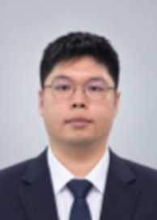

김동진 경력
1991 (35세)
- 이메일
- sm4***@gmail.com
- 휴대폰
- 010-****-7970
- 주소
- (22026) 인천 연수구 아카데미로

간략 소개
영업·배송·물류·전기자전거 정비 현장에서 9년간 일한 뒤, 대한상공회의소 인천인력개발원에서 로봇활용 첨단 생산시스템 과정(2026.03~10, 923시간)을 수료했습니다. 8인 팀 졸업 프로젝트(스마트팩토리 FMS 제작)를 진행하며, 저는 SolidWorks 기구 설계, PLC–ESP32 절연 회로, Dobot 4대 Python 제어, OPC UA 태그 106개의 MySQL 이력 수집을 맡았습니다. 같은기간 매치업 딥러닝 과정에서 YOLOv8 전이학습 결함 검출을 혼자 수행했습니다. 프로젝트에서 직접 제작한 무동력 롤러의 공급 불량을 시험으로 먼저 수치화(40회 중 25회)하고 개선해 0회로 줄였습니다. 이처럼 문제를 숫자로 확인하고 원인을 좁혀 해결합니다. 비전·PLC·로봇을 하나의 공정으로 연결해 본 경험을 바탕으로, 설비가 멈추지 않게 만드는 엔지니어로 성장하고 싶습니다.
하단 링크는 포트폴리오입니다
https://inc6f4i.github.io/portfolio/
나의 스킬
https://github.com/inc6f4i/dobot_control
경력총 9년 1개월
주식회사 쏘카 공유자전거 브랜드 일레클 대리점내 전기 공유 자전거 정비 외주업무 담당 회사 운영. 충전 배터리교체, 경정비, 재배치 등 전반적인 업무 지원. 생성형AI기반 TelegramBot API, Google sheet API를 활용해 봇을 제작 및 DB, Google Workspace 기반 사무 업무 자동화.
- 연봉
- 3,500만원
- 근무지역
- 인천
쿠팡 풀필먼트 냉동창고 리치 지게차를 이용한, 집품 및 진열, 상차, 하차, 재고확인업무
- 연봉
- 3,600만원
- 근무지역
- 인천
- 퇴사사유
- 업직종 전환
세탁물 수거 배송 수행, CS 업무 수행, AprilTag, Naver Map API 기반 Last Mile 배송업무
- 연봉
- 4,500만원
- 근무지역
- 경기
- 퇴사사유
- 경영악화
쿠팡맨, 상위권 APD, PPD
- 연봉
- 5,000만원
- 근무지역
- 경기
- 퇴사사유
- 업직종 전환
열대어 쇼핑몰 운영, 오프라인 매장관리, 거래처 납품, 수입업무, 상품 안내페이지 디자인, 포장, 창고 재고관리
- 연봉
- 2,800만원
- 근무지역
- 경기
- 퇴사사유
- 업직종 전환
경력기술서
1) 프로젝트명: 인천 인력 개발원 졸업 프로젝트
- 주요 업무 : 비전 로봇 기반 스마트 팩토리 구축. - 담당 역할 : SolidWorks 기구설계, PLC–ESP32 절연 회로·MDR 구동부, Dobot 로봇 제어, 디지털 트윈·DB 구축 - 기술 스택 : Python, 컴퓨터비전, PLC, digital twin, dobot control, EPLAN, SCADA - 업무 기간 : 2026.8 ~ 2026.9 - 개발 인원 : 8명 - 상세 내용 : 졸업 프로젝트로 실제 테이블에 유연생산시스템 모델 FMS를 제작하여 운용. 솔리드 웍스를 통한, 프로젝트 전반에 필요한 기구물 설계. 부족한 자재 구매담당(3D프린터 필라멘트, 절곡의뢰, 프로파일절단의뢰) 디지털 트윈 전용 소프트웨어 S-prodis 기반 레이아웃 설계, 생성형 AI를 통한 3D 모델뷰, 실제 AX화에 유효한 데이터를 얻기 위한 OPC-UA 태그 실시간 수집 DB 3종(SCADA DB 모니터링 DB, 로봇암 실시간 좌표데이터수집 DB, 공정상태 확인용 DB). 생성형 AI를 통한 공정 운영영상 동영상 편집. PLC - ESP32 전위차가 있는 시스템간 통신 절연처리(포토커플러 4n25활용)및 무동력 롤러컨베이어의 동력화 ESP32 기반 AGV 시제품을 제작했으나 제한된 공간에서 효과가 작아 적용을 중단하고, 모터·드라이버를 재활용해 무동력 공급 롤러를 MDR로 전동화 솔리드웍스 산출물: 무동력 롤러 컨베이어, 부분 동력 롤러 컨베이어(경사각있는 회전 테이퍼 롤러), 싱글로드 에어 실린더를 이용한 뒤틀림 방지 스토퍼 2종설계, 로봇 엔드이펙터 3종, 지그, 워크별 공급장치 3종, 알루미늄 프로파일 베이스 보관창고, 벨트 컨베이어, 각 공정의 명판, 실린더 브라켓용도의 절곡품 3종 , 로봇 베이스 리프터, 공급창고 2건, AGV 차체 외 5종부품, 컨베이어용 브라켓 4종 디지털 트윈 관련 산출물 : OPC-UA 모니터링 및 DB 프로그램1, MES 생산 및 보고서, 승인기능 포함한 웹기반 DB, 프로젝트내 SCADA가 산출하는 DB를 모니터링하는 수집 DB 프로그램 비전 관련 산출물 : github.com/inc6f4i2) 프로젝트명: 인천 인력 개발원 디지털 트윈 구축 프로젝트
- 주요 업무 : S-Prodis, PLC 디지털 트윈 구현 - 담당 역할 : 팀장, Work Breakdown Structure를 사용한 팀원 일정 관리, kick off발표, 중도보고, 최종 발표 - 기술 스택 : mariaDB, S-Prodis(DT), PLC, Kepware, OPC-UA - 업무 기간 : 2026.07 ~ 2026.07 (약 1개월) - 개발 인원 : 6명 - 상세 내용 : 디지털 트윈 소프트웨어 학습의 일환으로 미니 프로젝트 진행 - S-Prodis 기반 FMS Digital Twin 모델링: 임의의 유연생산 공장 Layout을 구성하고 공정·물류 흐름 및 가상설비 동작 구현 - PLC <==>Digital Twin 연동: S-Prodis의 가상 공정 진행 상태를 실제 PLC 출력과 연계하여 램프 점등 - OPC UA 통신 구성: Kepware를 OPC UA Server로 사용하여 PC–PLC 간 Ethernet 통신 및 Tag 데이터 연동 - MariaDB/Web 연동: 웹에서 주문 접수 및 주문 상태를 확인할 수 있도록 생산정보 DB 구성 - PLC, Ethernet, PC 통신간 트러블슈팅 경험 - Start, Busy,Finish 공정간 Handshake 신호처리 경험 - 프로젝트 관리: 6인 팀장으로 WBS 기반 일정관리, Kick-off 중간보고 최종보고 수행3) 프로젝트명 : 비전 딥러닝 심화학습 | 개인 프로젝트
- 주요 업무 : YOLO를 활용한 Vision 딥러닝 - 담당 역할 : 딥러닝 기반 개인 프로젝트 진행 - 기술 스택 : Machine Learning, Deep Learning, Pytorch, OpenCV, google COLAB, WANDB - 업무 기간 : 2026.7 ~ 2026.8 (약 1개월) - 개발 인원 : 1명 - 상세 내용 : 매치업 비전 딥러닝 중급자 과정 수료 - 인력개발원에서 비전을 학습하며 딥러닝에대한 추가 학습이 필요하다고 판단하여 일요일마다 정규교육과 별도의 매치업 강의 이수 - KT, 신한은행 딥러닝 연구원 경력의 조수현 박사로부터 교육, 실습진행 - 중급자 과정 수료를 위한 Yolo 기반 Vision 개인 프로젝트 수행 - 프로젝트 결과물을 개발원 교육생도 학습에 활용할수 있도록Google colab기반 .ipynb 형태로 배포학력
경험/활동/교육
- 산업기사장비를 이용한 멜섹 서보 모터 시퀀스 제어
- EPLAN 전장 설계
- Cimon SCADA 활용 PLC 연동, MySQL 연동
- 산업기사 실기 과제로 공유압 제어 실습
- 솔리드웍스 기능사 실기 과제로 모델링 실습 및 PJT
- python OOP 프로그래밍 학습 및 PJT
- pytorch 기반 DeepLearning 학습 및 PJT
- ESEtechnology S-Prodis를 활용한 DigitalTwin 구축 및 PJT
- DENSO Robot 및 Dobot 기반 로봇 제어 6dof, 4dof 제어 실습 및 PJT
- Deep Learning 기초 및 중급
- train을 위한 optimizer 학습
- 경사하강법 이해 학습
- Learning rate
- Overfitting 학습
- Validation Role 학습
- CONFUSION Matrix 학습
- wandb 활용 및 PJT
자격/어학/수상
포트폴리오/기타문서
자기소개서
자기소개.지원동기
저는 필요한 기술이라면 먼저 배우고, 빠르게 만들어 실제로 검증하는 엔지니어입니다. 스마트팩토리 교육과 프로젝트를 진행한 약 7개월 동안 PLC, 로봇 제어, 컴퓨터 비전, Python, OPC UA, DB 등 처음 접하는 기술을 계속 다뤘습니다. 하나의 분야를 배우고 다음으로 넘어가기보다, 프로젝트에서 문제가 생길 때마다 필요한 기술을 찾아 학습하고 기존 시스템에 연결했습니다. 함께 프로젝트를 진행한 다른 팀의 팀장은 저를 두고 “새로운 기술을 잘 가져와 기존 기술에 접목한다”고 평가했습니다. 실제로 다른 팀에서 ESP32를 프로젝트에 적용하는 아이디어를 가져와 저만의 방식으로 우리 팀 프로젝트에 적용했습니다.이것이 제가 가진 가장 큰 강점이라고 생각합니다.
빠르게 시도한다는 것은 처음 선택한 방법을 끝까지 고집한다는 의미가 아닙니다.
프로젝트 초기에는 ESP32 기반 AGV를 직접 제작해 공정 간 이송에 적용하려 했습니다. 그러나 제한된 공간에서 센서와 주행 안정성을 확보하는 데 드는 시간에 비해 공정에서 얻는 효과가 크지 않다고 판단해 최종 적용을 중단했습니다. 대신 AGV 개발에 사용했던 모터와 드라이버를 재활용해 무동력 공급 롤러를 MDR 방식으로 전동화했습니다. 그 결과 동일 조건 40회 시험에서 25회 발생하던 공급 실패를 0회까지 줄였습니다.
이전 쿠팡 근무에서도 제 할당 업무가 끝났다고 바로 업무를 종료하기보다, 물량이 밀린 구역에 자주 Share를 나갔습니다. 퇴근 시점에 추가 업무가 발생하더라도 팀의 마감을 위해 지원했고, 예상하지 못한 업무가 생겼을 때 제 업무 범위를 이유로 외면하지 않았습니다. 이런 협업이 이어지면서 근무 캠프의 PPD가 지속적으로 상위 1~3위를 기록해 회사로부터 포상을 받기도 했습니다.
당시에는 이를 단순히 동료를 돕는 행동이라고 생각했지만, 스마트팩토리 프로젝트를 진행하면서 개별 작업자의 최적화보다 전체 공정의 병목을 제거하는 것이 더 중요하다는 점에서 같은 원리였다는 것을 깨달았습니다.
저는 한 사람이 필요에 따라 로봇·비전·제어·소프트웨어의 경계를 넘나들며 실제 제품을 완성하는 환경에서 더 빠르게 성장할 수 있다고 생각합니다.
스마트팩토리 프로젝트를 진행하며 가장 관심을 가졌던 문제는 현장에서 유사한 형상과 색상을 어떻게 안정적으로 구분하고, 그 결과를 실제 설비 제어까지 연결할 것인가였습니다. YOLO 기반 비전 학습뿐 아니라 Festo 비전센서, PLC, Python, OPC UA, DB 등을 직접 연결하며 비전 기술은 정확도만 높은 모델보다 현장 조건과 설비에 맞게 적용되는 것이 중요하다는 점을 배웠습니다.